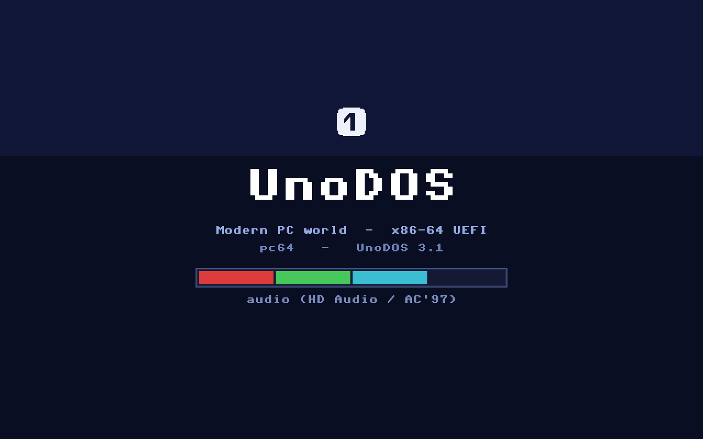
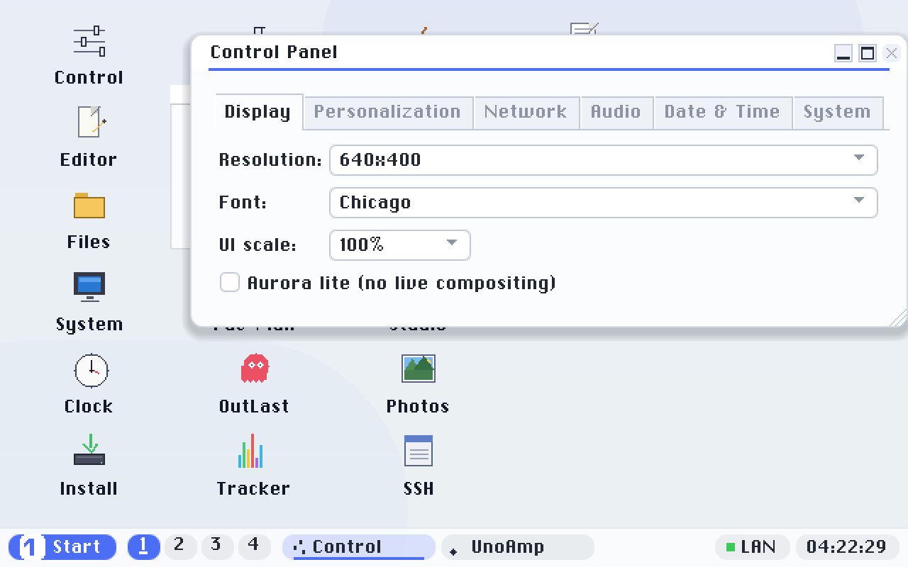

Getting started
The easiest way to run UnoDOS pc64 is the USB flasher: download it, write UnoDOS to a spare USB stick, and boot. No building, no command line.
What you need
- A spare USB stick of any size (the image is tiny). Everything on it will be erased.
- A 64-bit UEFI PC to boot it on, meaning essentially any x86-64 machine from about 2007 on.
Install with the flasher
- Download the flasher for your operating system:
- Windows: UnoDosFlasher.exe (1.8 MB). No install; it prompts for Administrator (raw disk writes need it).
- macOS: UnoDosFlasher-macOS.zip (1.4 MB).
Unzip and open
UnoDosFlasher.app; it prompts for your administrator password.
- Run it and plug in your USB stick. The flasher picks the smallest removable disk automatically; check it is the right one.
- Click Install and confirm the erase. The flasher writes a bootable UnoDOS image to the drive.
This wipes the driveThe whole selected drive is erased. Double-check you picked the USB stick and not an internal disk before confirming.
First launchThese builds are not signed with a paid developer certificate yet, so your OS may warn on first launch. On Windows, if SmartScreen appears, click More info → Run anyway. On macOS, right-click the app and choose Open the first time (Gatekeeper). Prefer to build it yourself? See the Developer guide.
Boot the target PC
- Plug the USB stick into the PC you want to run UnoDOS on.
- Enter firmware setup (usually Del, F2 or F12 at power-on) and turn Secure Boot off (the image is unsigned).
- Pick the USB stick from the UEFI boot menu.
Prefer not to touch hardware? You can boot the same image in an emulator instead. See Run it in QEMU.
First boot
A splash screen with a loading bar appears while UnoDOS starts up, then a short start-up chime plays as the desktop appears. On a laptop the TrackPoint, touchpad and keyboard all work.


From here, everything is a keystroke away. Ctrl+Esc opens the Start menu; arrow keys and Enter launch apps; Ctrl+W closes a window. The desktop tour covers the rest.
Want to build UnoDOS from source instead of flashing a prebuilt image? That's in the Developer guide.